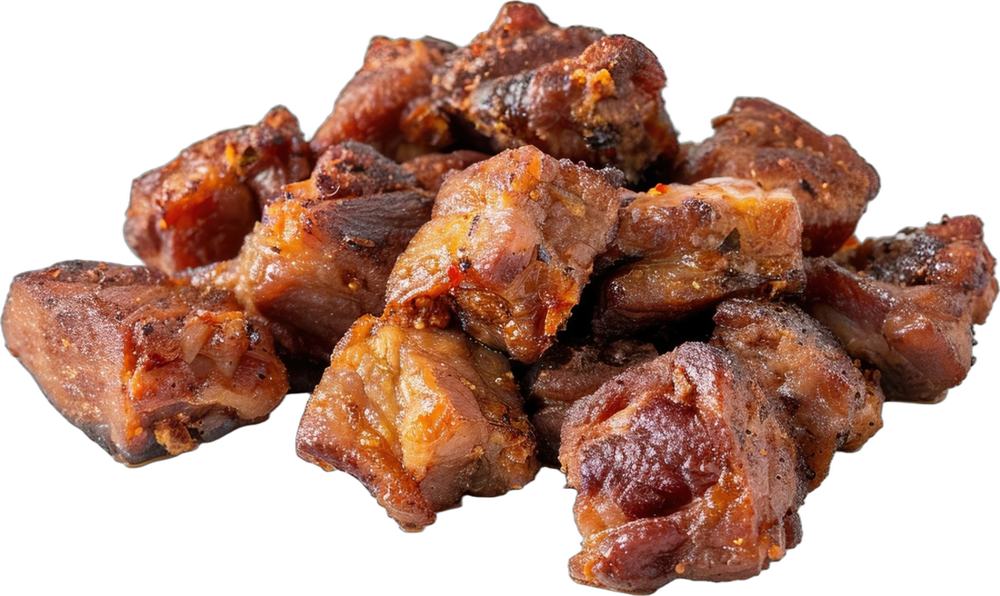
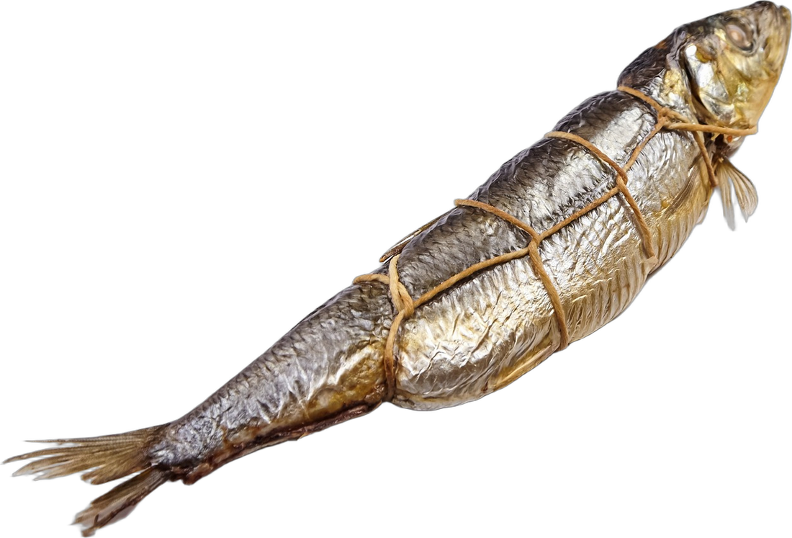
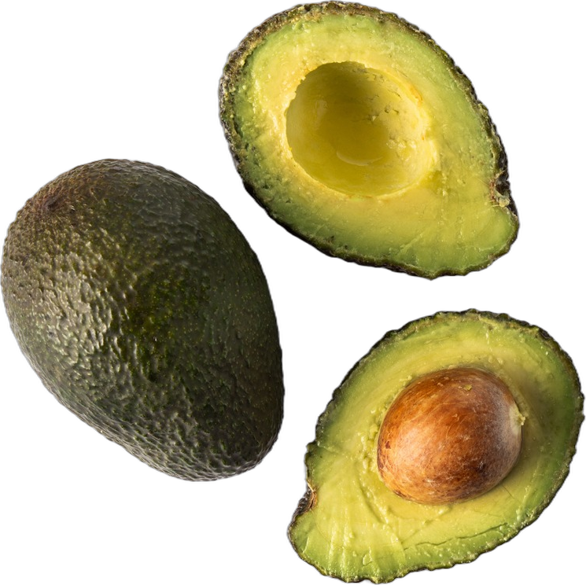

VS

VS
« LES DEUX »
REC 00:00:00:00
HAÏTI · KWIZIN
PEZE
1re FRITURE
2e FRITURE
CRAC !

ÇA PIQUE !
CAMP N° 1 · PEZE
BOUYI
CUIT DANS L'EAU · À LA MARMITE
TOUT SIMPLE
TOUT TENDRE
IL EST07:00


CAMP N° 2 · BOUYI
ROUND
ROUND 1
CRAC !
ROUND 2
0 GOUTTE D'HUILE
FÈT
ROUND 3
BAPTÊME
MARIAGE
1re COMMUNION
ROUND 4
PRÊT !
DEBA
CAMP PEZE
PLAT DE MALADE ?!
CAMP BOUYI
2 – 2
ÉGALITÉ
PEZE
BOUYI
VS
@ IDENTIFIE LE CAMP D'EN FACE
Répondez ici
PEZE0
–0BOUYI
+1 PEZE
+1 BOUYI
+1 PEZE
+1 BOUYI
DÉBAT · KWIZIN HAÏTI